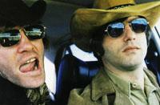
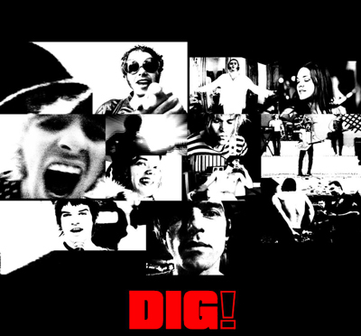

|
|
Mo, 13. November 2006
DiG! (US 2003)
 Über den Zeitraum von sieben Jahren hinweg folgte die Regisseurin Ondi Timoner dem aufregenden und abwechslungsreichen Parcours zweier wesensverwandter, aber grundverschiedener Musiker und Bandleader. Anton Newcombe von Brian Jonestown Massacre der eine, und Courtney Taylor von den Dandy Warhols der andere. DIG! ist das Dokument dieser unterschiedlichen Haltungen: des Widerstands gegen das vampyristische Musikbusiness und der berechnenden Anpassung.
Sollten Universitäten je ein Studium für Rock-Starruhm einführen, dann wäre DIG! ein Eckpfeiler des Lehrplans, denn der Film funktioniert sowohl als Gebrauchsanleitung als auch als ermahnende Erzählung. DIG! ist so etwas wie ein ausgebauter Kommentar zu diesem überschwänglichen, zynischen Song der Byrds, der mit den Worten beginnt: «So you wanna be a rock n roll star, well listen now, to what I say.»
Wie ihre Namen suggerieren, haben beide Bands in DIG! eine
Vorliebe für schwerfällige Wortspiele und ironisieren die
Popkultur der
1960er Jahre. The Massacre benannte sich nach dem Rolling
Stones-Gitarristen und Märtyrer des Jahrzehnts, Brian Jones.
Obgleich
ein produktiver Songschreiber, der Dutzende Instrumente spielt und sich
selbst als revolutionäre Figur sieht, besitzt Newcombe das
traurige
Talent, seine eigenen Karrierechancen zu sabotieren: Seine
Ausflüge in
den Drogenrausch, seine Paranoia-Anfälle sowie seine Angewohnheit,
seine Bandmitglieder vor den Kopf zu stoßen und zuweilen physisch
zu
attackieren, sind für ihn kaum noch kontrollierbar, und ein
tragisches
Ende seiner Geschichte ist unabwendbar. (A. O. Scott - New York Times)

"Heaven-sent narrative! If universities ever start graduate programs in rock stardom, 'Dig!' will surely be a cornerstone of the curriculum." - A.O. Scott, New York Times
"Fascinating! A combustible rock chronicle. The richly deserving winner of the Documentary Grand Jury Prize at Sundance." - Darren D'Addario, Time Out New York
"Terrific and fascinating! 'Dig' is chock full of drama yet too sympathetic to seem exploitative." - Dennis Harvey, Variety
"A viciously sharp essay on art, commerce, friendship and madness." - Ty Burr, The Boston Globe
"The ultimate purity-vs-sell-out story, with the caution that the pure band is absolutely bonkers and the sell-outs aren't really sell-outs at all and, in fact, have never stopped honing their style and sound." - Shawn Levy, The Oregonian
I cant remember a documentary that so elegantly captures the complete and utter self destruction of a man right before your eyes. DIG! is supremely fascinating, highly watchable and must see cautionary tale for anyone who picks up a guitar. - Aint It Cool News
The Brian Jonestown Massacre spielte am Mo 6.11.2006 live in Wien.
Festivalpreise:
Sundance 04 - Großer Jury Preis für die beste Doku
DiG!, US 2003, B+R: Ondi Timoner, D: The Brian Jonestown Massacre (Anton Newcombe,
Joel Gion, Matt Hollywood, Peter Hayes, Jeff Davies, Dean Taylor, Brad
Artley) + The Dandy Warhols (Courtney
Taylor, Zia McCabe, Peter Holstrom, Eric Hedford, Brent DeBoer),
110min, eOF
19:30 Uhr, Space04 Kunsthaus Graz, € 5.-
- [Official Website]
- [imdb] 7.8/10 (1,247 votes)
- [viennale04]